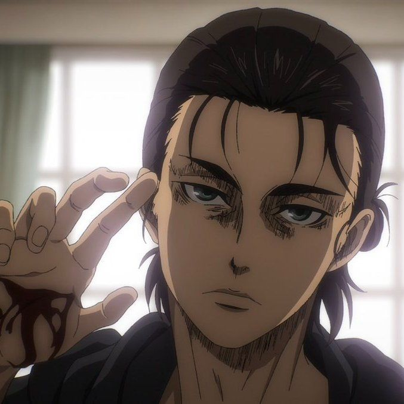
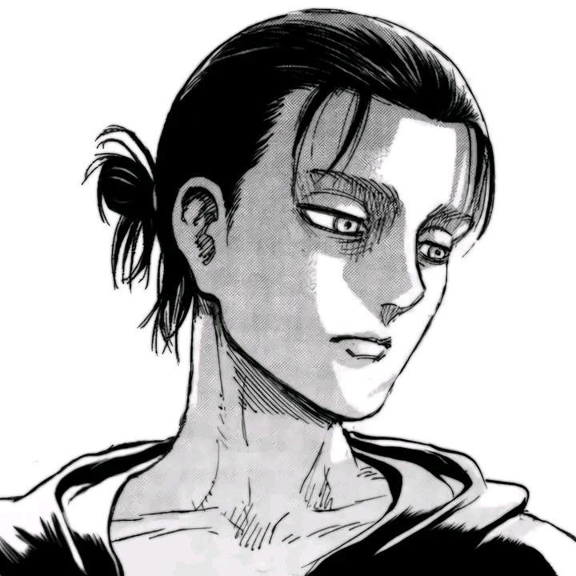

Nom complet : Eren Jäger (エレン・イェーガー)
Âge : 15 ans (début de la série), 19 ans (saison 4)
Taille : 170 cm (début), 183 cm (saison 4)
Poids : 63 kg (début), 82 kg (saison 4)
Date de naissance : 30 mars
Lieu de naissance : District de Shiganshina
Affiliation : Bataillon d'Exploration (104e Brigade d'Entraînement)
Statut : Décédé
Père : Grisha Jäger
Mère : Carla Jäger (décédée)
Demi-frère : Zeke Jäger
Sœur adoptive : Mikasa Ackerman
Titan Assaillant - Hérité de son père Grisha
Titan Originel - Hérité de son père après qu'il ait dévoré Frieda Reiss
Titan Marteau d'Armes - Obtenu après avoir dévoré Lara Tybur
Eren Jäger est né et a grandi dans le district de Shiganshina, situé au sud du mur Maria. Dès son plus jeune âge, il rêvait de rejoindre le Bataillon d'Exploration pour explorer le monde au-delà des murs, malgré les objections de sa mère.
En l'an 845, à l'âge de 10 ans, Eren assiste impuissant à la destruction du mur Maria par le Titan Colossal et à la mort de sa mère, dévorée par un Titan. Cet événement traumatisant forge sa détermination à exterminer tous les Titans.
Eren rejoint la 104e Brigade d'Entraînement avec Mikasa et Armin. Bien qu'il ne soit pas le meilleur de sa promotion, sa détermination et son esprit combatif le distinguent. Il termine 5e de sa promotion.
Lors de sa première mission, Eren est dévoré par un Titan mais se transforme pour la première fois en Titan Assaillant, sauvant ses camarades. Cette révélation change le cours de la guerre contre les Titans.
Après avoir découvert la vérité sur le monde extérieur et vu les souvenirs futurs, Eren lance le Grondement de la Terre dans une tentative d'éliminer l'humanité hors de Paradis. Il est finalement arrêté et tué par Mikasa.
Eren est un personnage extrêmement déterminé et têtu, prêt à tout pour atteindre ses objectifs. Dans sa jeunesse, il est impulsif, colérique et motivé par un désir intense de liberté et de vengeance.
Au fil de la série, sa personnalité évolue radicalement. Après avoir découvert les vérités sur le monde et ses propres pouvoirs, il devient plus calculateur, manipulateur et prêt à commettre des actes terribles pour ce qu'il considère comme la liberté de Paradis.
Malgré sa transformation, Eren conserve un amour profond pour ses amis, même s'il les éloigne pour les protéger de ses plans.
"Si on ne se bat pas, on ne peut pas gagner."
"Je vais les exterminer... Tous jusqu'au dernier de ces animaux qui sont sur cette Terre !"
"Je continuerai d'avancer... jusqu'à ce que tous mes ennemis soient détruits."
"Depuis ma naissance... la liberté."
Sœur adoptive et amour d'enfance. Mikasa est extrêmement protectrice envers Eren, qui finit par comprendre ses sentiments trop tard.
Meilleur ami depuis l'enfance. Leur amitié est mise à l'épreuve par les choix d'Eren, mais reste profonde jusqu'à la fin.
Demi-frère. Leur relation complexe est au cœur de l'arc final, avec des objectifs apparemment alignés mais fondamentalement différents.
Relation complexe passant d'ami à ennemi juré, puis à une compréhension mutuelle de leurs circonstances similaires.